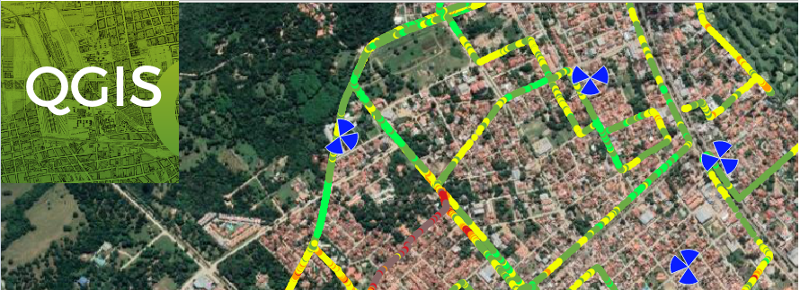
Daremos mayor utilidad a QGIS cargando archivos de Drive Test (.tap/.shp), lo que servirá como base para la generación de reportes completos y análisis rápidos del estado de la red.
Este flujo de trabajo permite a ingenieros de optimización visualizar métricas clave como RSRP, SINR y RSRQ de forma geoespacial, facilitando la identificación de problemas de cobertura, interferencia y calidad de servicio.
- ✅ Visualización geoespacial intuitiva de rutas y métricas
- ✅ Integración con capas base (Google Satellite, OpenStreetMap)
- ✅ Estilos reutilizables para RSRP, SINR, RSRQ, etc.
- ✅ Exportación profesional a PDF, imágenes o dashboards
1 Importar archivo .Tap/.Shp en QGIS
El proceso de carga es sencillo y compatible con múltiples herramientas de Drive Test (TEMS, Nemo, Dingli, etc.):
- Abre QGIS y localiza el panel Browser o el explorador de archivos
- Navega hasta la carpeta que contiene tu archivo
.tapo.shp - Arrastra y suelta el archivo directamente sobre el área de capas de QGIS
- Alternativamente:
Capa → Añadir capa → Añadir capa vectorial
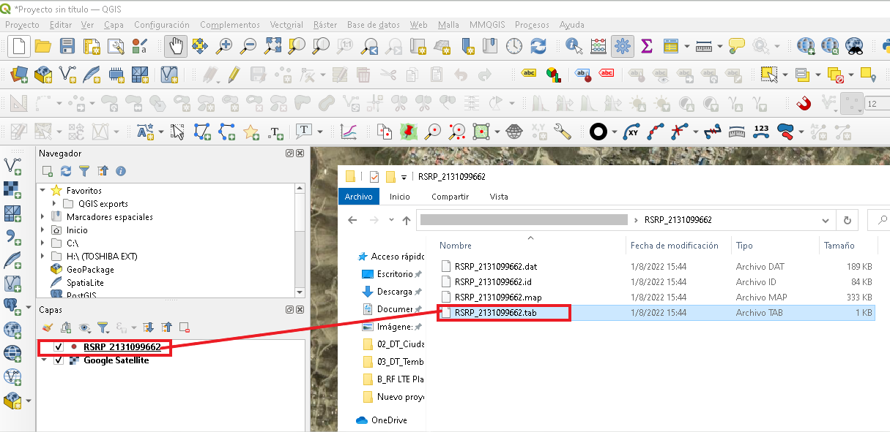
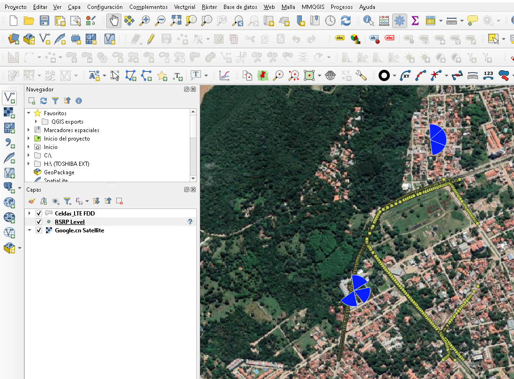
Nota: Si tu herramienta de Drive Test exporta niveles preconfigurados, estos se cargarán automáticamente. Si no, continuamos con los pasos siguientes para crearlos manualmente.
2 Configuración inicial de la capa
Si la capa se visualiza con contorno oscuro o símbolos no deseados, personaliza la apariencia base:
- Click derecho sobre la capa de interés (ej:
RSRP) → Propiedades - Ve a la pestaña Simbología
- Selecciona Símbolo único → Marcador simple
- En Estilo de marca, selecciona Sin plumilla (para quitar el borde)
- Haz clic en Aplicar → Aceptar
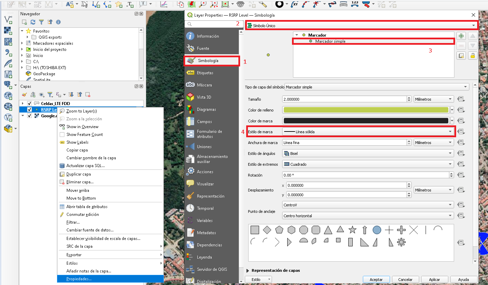
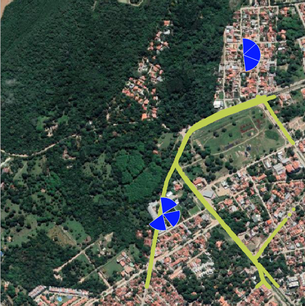
3 Crear niveles de RSRP personalizados
Para visualizar los niveles de señal LTE-RSRP con una rampa de colores intuitiva:
- Click derecho sobre la capa → Propiedades → Simbología
- Cambia el tipo de renderizado a Graduado
- Valor: Selecciona la columna que contiene los valores de RSRP
- Rampa de colores: Selecciona
Spectral(recomendado para métricas de señal) - Modo: Elige
Cuantil (conteo igual)para distribución equilibrada - Clases: Define la cantidad de niveles (ej:
8para RSRP típico) - Haz clic en Clasificar para generar los rangos automáticos
# Rangos típicos para LTE-RSRP (dBm):
Clase 1: [-∞, -120] → Rojo oscuro (Sin señal)
Clase 2: [-120, -110] → Rojo (Muy débil)
Clase 3: [-110, -100] → Naranja (Débil)
Clase 4: [-100, -90] → Amarillo (Regular)
Clase 5: [-90, -80] → Verde claro (Bueno)
Clase 6: [-80, -70] → Verde (Muy bueno)
Clase 7: [-70, -60] → Verde azulado (Excelente)
Clase 8: [-60, +∞] → Azul (Óptimo)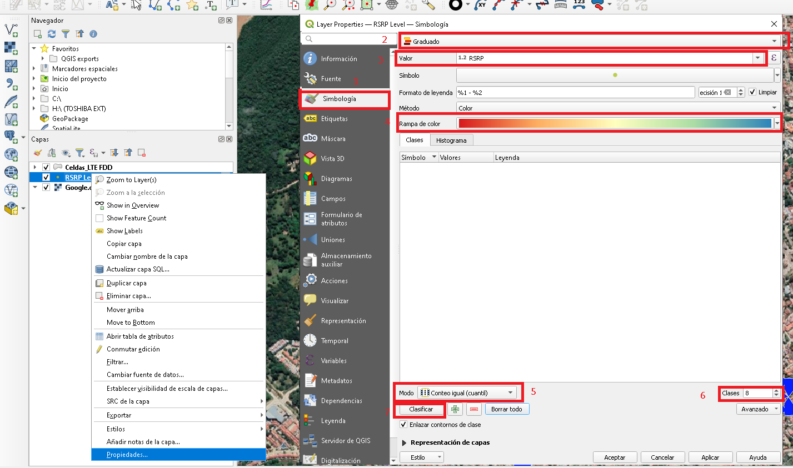
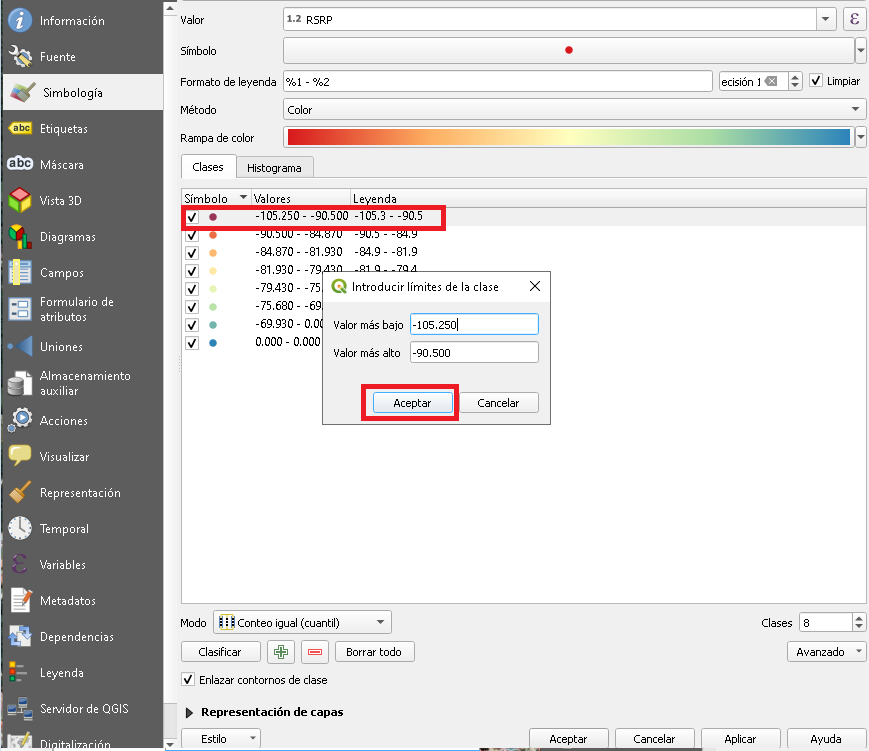
4 Editar leyendas y rangos de color
Personaliza los rangos y etiquetas para alinearse con los estándares de tu operador:
- Doble clic sobre un rango en la lista de símbolos
- Ajusta los valores Valor y Etiqueta según necesidad
- Para cambiar el color: haz clic en el cuadro de color y selecciona uno personalizado
- Para eliminar un nivel: selecciónalo y presiona el botón − (menos)
- Haz clic en Aplicar → Aceptar para guardar cambios
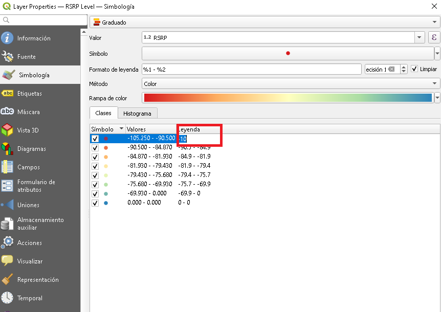
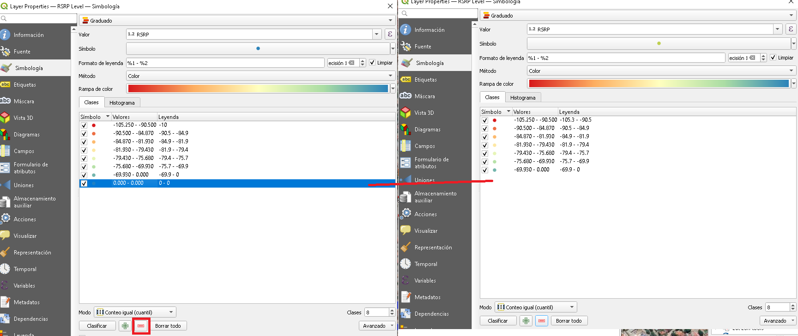
⚠️ Buenas prácticas: Mantén consistencia en los rangos de color entre proyectos para facilitar la comparación visual. Documenta tus convenciones en un archivo de estilo compartido.
5 Guardar estilo como plantilla reutilizable
Para no repetir la configuración en futuros proyectos, guarda tu estilo como plantilla:
- Con la capa seleccionada, ve a Estilo → Guardar estilo
- Elige formato
QGIS Layer Style File (.qml) - Navega a tu carpeta de repositorio de estilos (ej:
QGIS_Styles/RF/) - Nombre del archivo:
RSRP_Spectral_8classes.qml - Haz clic en Guardar

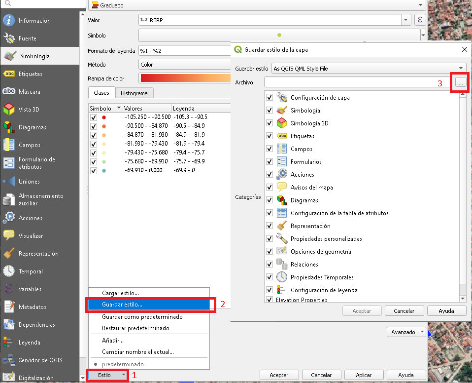
🔄 Reutilizar estilo en futuros proyectos:
- Click derecho sobre la capa → Propiedades → Simbología
- Ve a Estilo → Cargar estilo
- Navega hasta tu archivo
.qmlguardado - Selecciona y haz clic en Abrir → Aplicar
🚀 Tip avanzado: Crea plantillas para SINR.qml, RSRQ.qml, Throughput.qml y compártelas con tu equipo vía Git o carpeta compartida para estandarizar reportes.
6 Resultado final y exportación
¡Listo! Ahora tienes una visualización profesional de tu ruta de Drive Test con niveles de RSRP claramente diferenciados:

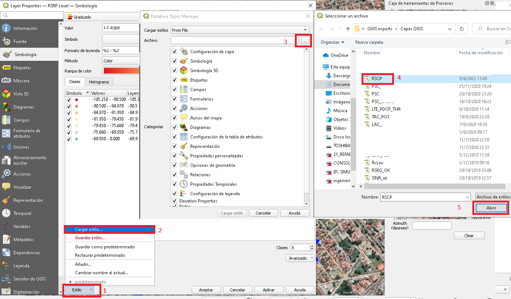
📤 Opciones de exportación:
- Imagen PNG/JPG:
Proyecto → Importar/Exportar → Exportar mapa como imagen - Reporte PDF: Usa el Compositor de Impresión para layouts con leyenda, escala y north arrow
- Web map: Exporta a
qgis2webpara visualización interactiva en navegador - Datos procesados: Exporta a GeoJSON/CSV para integración con dashboards Python/Tableau
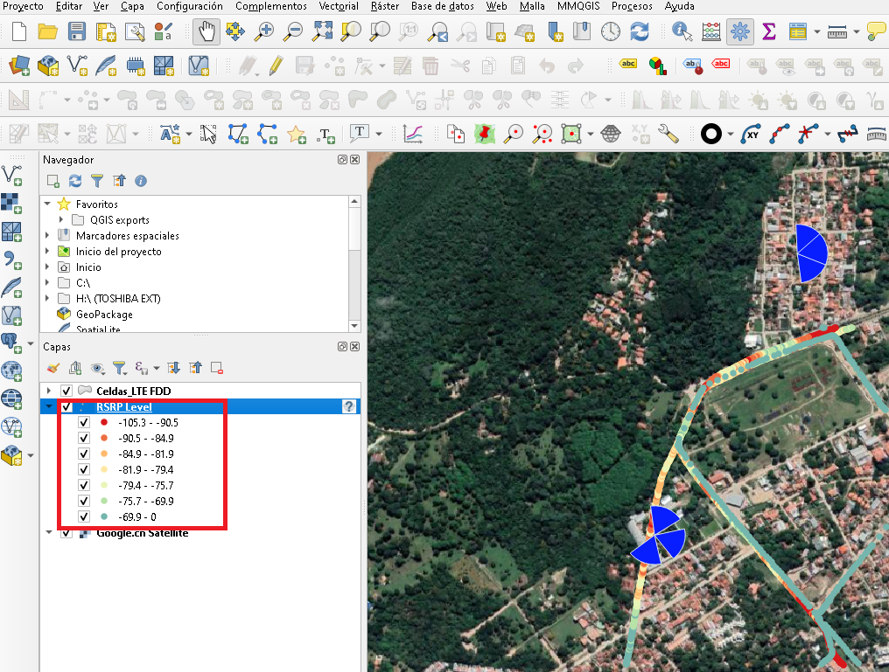
Conclusión
Dominar la carga y estilización de archivos de Drive Test en QGIS permite agilizar significativamente el análisis de cobertura y calidad de red. Al crear plantillas de estilo reutilizables, estandarizas la visualización de métricas clave (RSRP, SINR, RSRQ) y facilitas la generación de reportes consistentes para toma de decisiones técnicas.
Este flujo de trabajo open-source es una alternativa poderosa a herramientas propietarias, con la ventaja de ser gratuito, flexible y compatible con múltiples formatos de datos.
Espero que este tutorial sea de utilidad para tu trabajo diario. ¡Compártelo con colegas que también trabajen con análisis de Drive Test!
Comentarios
Los comentarios están deshabilitados temporalmente. Para preguntas técnicas, contáctame directamente por email o LinkedIn.